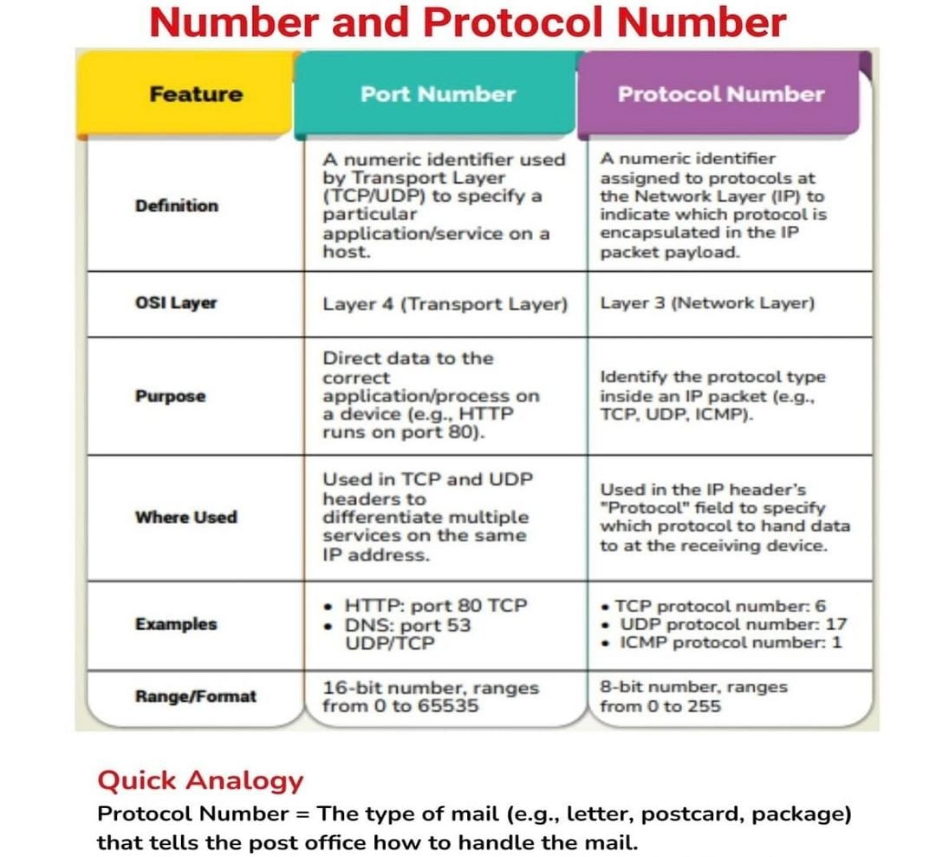

Networking Fundamentals: Port Numbers, Protocol Numbers, and OSI Layers
Port Numbers
A port number is a numeric identifier used by the Transport Layer (Layer 4 of the OSI model), specifically by TCP (Transmission Control Protocol) and UDP (User Datagram Protocol). It is used to identify specific services or applications running on a host machine. For example, web traffic (HTTP) typically runs on port 80, while DNS (Domain Name System) services usually operate on port 53.
The main purpose of port numbers is to ensure that data is delivered to the correct application or service on a device. If multiple applications are running on a single IP address, port numbers help in distinguishing the traffic meant for each application.
Port numbers are 16-bit integers and range from 0 to 65535. These are typically divided into:
· Well-known ports (0–1023): Reserved for common services like HTTP, FTP, SMTP.
· Registered ports (1024–49151): Used by software applications.
· Dynamic/private ports (49152–65535): Assigned dynamically to client applications.
Protocol Numbers
Unlike port numbers that operate at the Transport Layer, protocol numbers are used at the Network Layer (Layer 3) of the OSI model. A protocol number is an 8-bit identifier included in the IP header of every IP packet. It indicates the type of protocol the packet is carrying, such as TCP, UDP, or ICMP.
This number tells the receiving system how to interpret the data in the IP packet's payload. For example:
· ICMP (Internet Control Message Protocol) has protocol number 1
· TCP has protocol number 6
· UDP has protocol number 17
· IGMP (Internet Group Management Protocol) is 2
· OSPF (Open Shortest Path First) is 89
Protocol numbers range from 0 to 255, and each number uniquely identifies a protocol. These are defined by the Internet Assigned Numbers Authority (IANA).
�� Difference Between Port and Protocol Numbers
To understand the difference in simple terms, consider this analogy:
Protocol Number is like the type of mail (e.g., letter, postcard, courier) that tells the post office how to handle it.
Port Number is like the department in an organization (e.g., Accounts, HR, Sales) where the letter should be delivered.
So, protocol numbers classify the kind of packet being handled (e.g., TCP or ICMP), while port numbers specify which application or service should receive the packet.

�� Commonly Used Port Numbers and Their Services
Here are some of the most commonly used ports and their associated services:
· HTTP uses port 80 for non-secure web traffic.
· HTTPS uses port 443 for secure web communication with SSL/TLS.
· FTP (File Transfer Protocol) uses ports 21 and 20 for control and data transfer respectively.
· SSH (Secure Shell) uses port 22 for secure remote login.
· Telnet uses port 23 for remote terminal access (not secure).
· SMTP (Simple Mail Transfer Protocol) uses port 25 to send emails.
· DNS uses port 53 and can operate on both TCP and UDP.
· POP3 uses port 110 and IMAP uses port 143 for email retrieval.
· SNMP (Simple Network Management Protocol) uses port 161 and operates over UDP.
· LDAP (Lightweight Directory Access Protocol) uses port 389.
· SMB (Server Message Block) uses port 445 for Windows file sharing.
· RDP (Remote Desktop Protocol) uses port 3389.
· NTP (Network Time Protocol) uses port 123.
· SIP (Session Initiation Protocol) uses port 5060 for VoIP signaling.
· Syslog uses port 514 for system logging.
· MySQL uses port 3306, and MSSQL uses port 1433.
· TFTP (Trivial File Transfer Protocol) uses port 69.
Each of these services uses either TCP, UDP, or sometimes both, depending on the nature of the communication.
OSI Model
The OSI Model (Open Systems Interconnection Model) is a conceptual framework that describes how data flows in a network in 7 layers:
1. Physical Layer: Transmits raw bitstreams over physical medium (Ethernet cables, Wi-Fi PHY, USB).
2. Data Link Layer: Deals with MAC addresses and node-to-node data transfer (Ethernet MAC, ARP, PPP).
3. Network Layer: Handles logical addressing and routing (IP, ICMP, IGMP, OSPF).
4. Transport Layer: Ensures reliable or unreliable delivery of data (TCP, UDP).
5. Session Layer: Manages sessions between applications (NetBIOS, PPTP).
6. Presentation Layer: Deals with data encoding, compression, and encryption (SSL/TLS, JPEG, MPEG).
7. Application Layer: Interfaces directly with user applications (HTTP, FTP, SMTP, DNS, SSH).